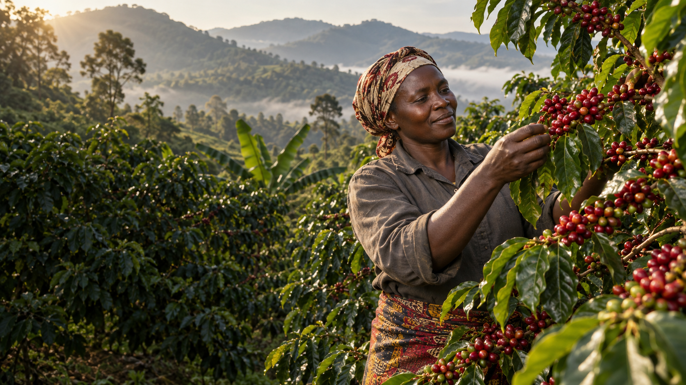
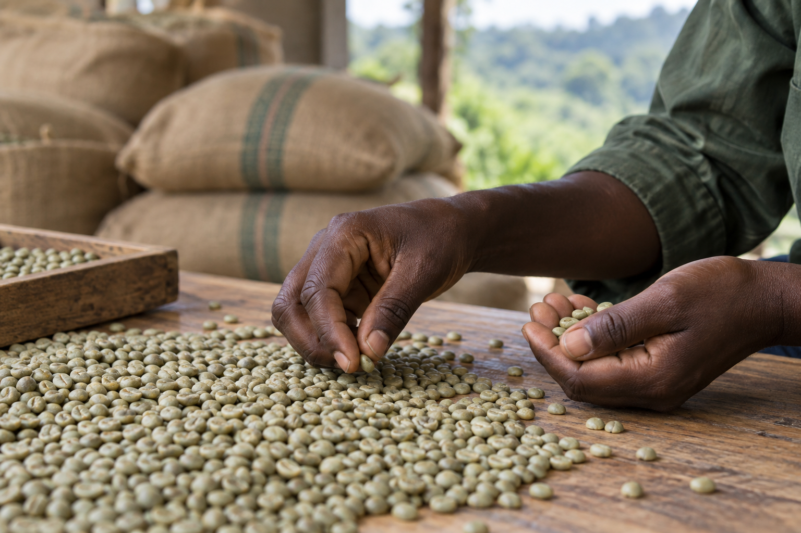
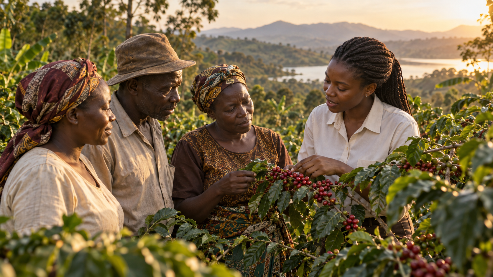
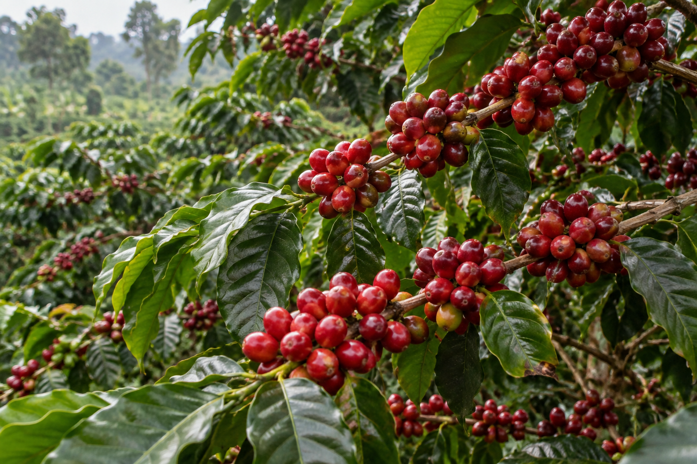
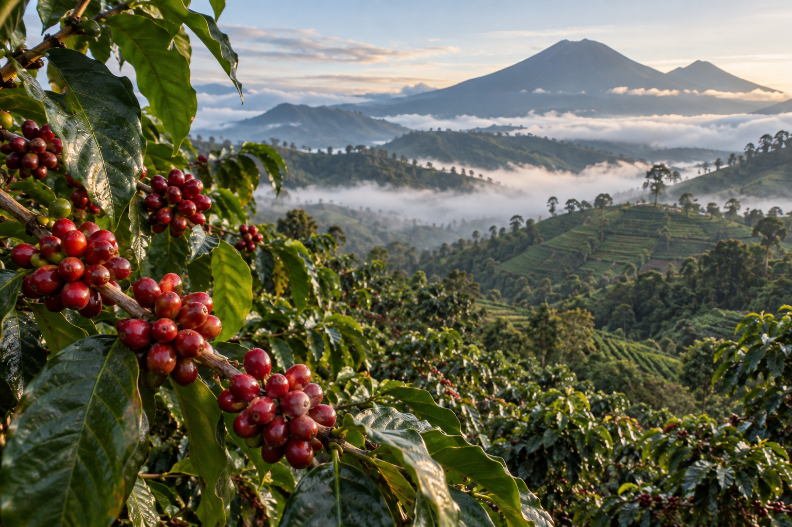

Coffee sourcing
Engaging with coffee-producing communities and supply partners across Uganda.

From Uganda · For global trade
Kioji Investments sources quality Robusta and Arabica coffee while building responsible relationships across Uganda’s coffee value chain.
Kioji at origin
Kioji Investments Ltd is a Kampala-based coffee enterprise working across sourcing, farmer engagement, handling, value addition and green coffee trading.
Discover who we areEngaging with coffee-producing communities and supply partners across Uganda.
Building practical, respectful connections with smallholder farmers at origin.
Supporting careful movement, sorting and preparation through the value chain.
Preparing Ugandan green coffee for commercial buyers and international trade.

Attention at every stage
Coffee changes hands many times before it is ready for trade. Kioji’s role is to support thoughtful handling, clear communication and responsible commercial relationships throughout that journey.
See our coffee
Partnership at origin
Our approach recognises the knowledge and work of Uganda’s smallholder farmers. We aim to build relationships that support reliable sourcing and shared long-term value.
Meet our approachUgandan origins
Uganda is home to both Robusta and Arabica. Kioji presents each coffee for what it is—distinct in character, grounded in place and handled for the green coffee market.

Robusta
Ugandan Robusta forms an important part of the country’s coffee story and its commercial coffee trade.
Explore Robusta
Arabica
Ugandan Arabica reflects the elevated landscapes and careful work of its producing communities.
Explore ArabicaStart a conversation